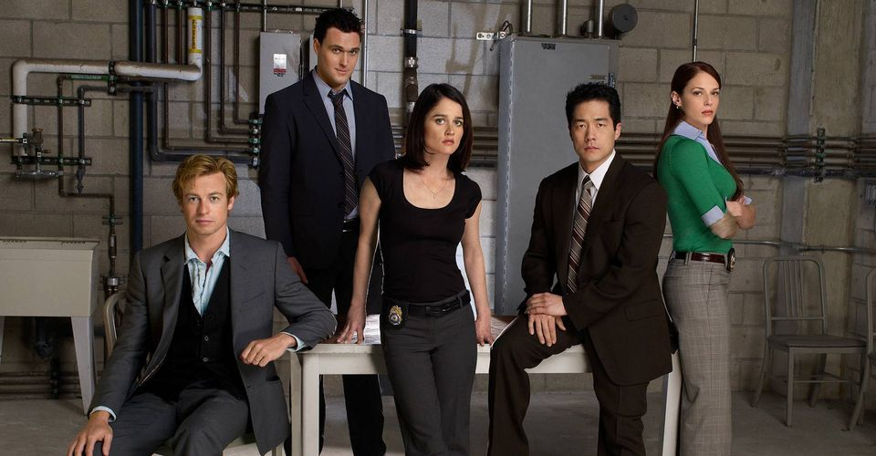

Having developed Rome for HBO, Heller was interested in doing something different and wanted to prove himself. CBS was looking for a show that would work as a companion to NCIS, and Heller welcomed the challenge of developing a popular show within the constraints of prime time network television and adapted his concept to fit.[2] Heller describes the character as being a combination of a Sherlock Holmes type and street psychic, part detective helping people and part con-artist selling people lies. Wanting the character to have both physical and spiritual grace, Heller imagined someone like Cary Grant for the role.
